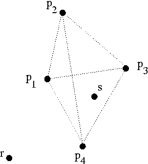

Points
Time limit: 10s
In this problem you will be given a set of points in the Euclidian plane. The number of points in the set will never exceed 100000.
The coordinates of these points will be integer coordinates and will have an absolute value smaller than 10000. There will be no
identical points in the first set. Then you will be given a second set of points. For each point in the second set you will have to determine
whether it lies in a triangle spanned by three points in the first set. A point lying on the edge of a triangle is considered to be "inside"
the triangle.
In the following example the points p1,p2,p3,p4 belong to
the first set. The points r and s belong to the second set. The point r isn't contained
in any triangle spanned by three points of the first set. The point s is contained in two triangles.
For example, the triangle spanned by p2,p3,p4.

Input
You will be given several testcases. A testcases consists of the number of points p, 3 ≤ p ≤ 100000 in the first set.
It is followed by p pairs of numbers, each describing a point of the first set, the first number of a pair denoting the
x-coordinate of the point, the second the y-coordinate. Each pair is on a seperate line.
There may be colinear points in the first set. The next number in the input gives you the number of points r
in the second set. It is followed by r pairs of numbers, each describing a point, each on a separate line. The first number of a pair
being the x-coordinate, the second number being the y-coordinate of the point. All coordinates in the input
will be integer coordinates.
Output
For each point in the second set, output if the point lies in a triangle spanned by three points of the first set. If the point lies
inside a triangle output inside otherwise output outside.
Sample input
4
0 0
4 4
0 4
4 0
6
2 2
4 4
1 1
0 2
0 10
10 0
Sample output
inside
inside
inside
inside
outside
outside
FAU Local Summer Contest 2005
Author: Tilmann Spiegelhauer